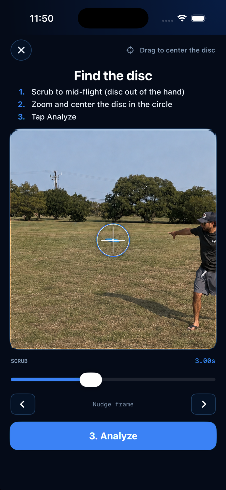
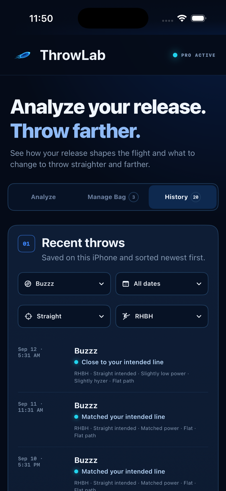

Power match
See whether your release speed is slightly low, matched, or slightly high for the disc you selected. A driver and a midrange should not be judged the same way.
Analyze your release.Throw farther.
ThrowLab analyzes your power match, disc angle, and release path from slow-motion video. It compares the release with your intended line and gives you one clear next step.
Measure your power match, disc angle, and release path, then get one clear next step.

How it works

Search for the disc you threw, then select RHBH, RHFH, LHBH, or LHFH.
Use landscape video trimmed from shortly before release until just after the disc leaves the frame.
Scrub until the disc is out of your hand, then zoom and center it completely inside the circle.
See your release breakdown, how closely it matched your intended line, and one clear next step.
What ThrowLab analyzes
ThrowLab reads three parts of the release, then compares them with the line you selected and the disc in your hand.
See whether your release speed is slightly low, matched, or slightly high for the disc you selected. A driver and a midrange should not be judged the same way.
See whether the disc leaves your hand on anhyzer, flat, or hyzer, with intermediate readings when the release falls between them.
See whether the disc is traveling upward, flat, or downward immediately after release.
Scored to the disc you threw
The same release can produce a very different flight with an overstable driver than with an understable midrange. ThrowLab uses the selected disc’s speed, glide, turn, and fade so the feedback fits the mold in your hand.
When your power is slightly low or high, Disc Fit suggests alternatives with a different speed, glide, turn, or fade profile. When power matches, the coaching stays focused on the release.

Get the clearest analysis
A clear rear-quarter view helps ThrowLab follow the disc at release and through the first part of its flight.
About accuracy: Results are training estimates, not launch-monitor measurements. Heavy blur, poor lighting, an obstructed disc, or the wrong camera angle can make the disc harder to track. When that happens, ThrowLab may ask for a clearer clip.
Throw history
Every analysis is saved on your iPhone. Compare releases over time and see whether the change you made actually carried into the next throw.

Common questions
ThrowLab estimates power match, disc angle, and release path from slow-motion video. It then compares the release with the intended line you selected and gives you one clear next step.
On a hyzer release, the disc’s outer edge—the edge farthest from your body—is lower than the inner edge. On an anhyzer release, the outer edge is higher. A flat release sits between them. ThrowLab interprets the angle using your throwing side and whether you throw backhand or forehand.
Yes. ThrowLab supports right-hand backhand, right-hand forehand, left-hand backhand, and left-hand forehand. Your selected throw style helps the app interpret hyzer and anhyzer correctly and describe the expected flight direction.
Yes. The disc does not need to land on camera. Keep it visible for several frames after release so ThrowLab can read the release and early flight.
No. ThrowLab uses slow-motion video from your iPhone. You select the disc from your bag and center it in one mid-flight frame before analysis.
Power match and Disc Fit depend on the disc you actually threw. ThrowLab uses the selected disc’s speed, glide, turn, and fade to keep the comparison and guidance specific to that mold.
No. ThrowLab is focused on the disc at and immediately after release. It does not score reach-back, footwork, brace, or hip rotation.
No. Throw videos are analyzed on your iPhone and are not uploaded for analysis. ThrowLab does not require an account.
ThrowLab Pro is $4.99 per month or $39.99 per year after a 3-day free trial. Apple charges your Apple Account when the trial ends unless you cancel at least 24 hours before renewal.
On-device analysis
Your throw video is analyzed on your iPhone and is never uploaded for analysis. No ThrowLab account is required.
ThrowLab Pro for iPhone
Try every analysis feature free for 3 days. Continue for $4.99/month or $39.99/year. Your throw videos stay on your iPhone.
Cancel at least 24 hours before the trial ends in Settings under your Apple Account and Subscriptions.